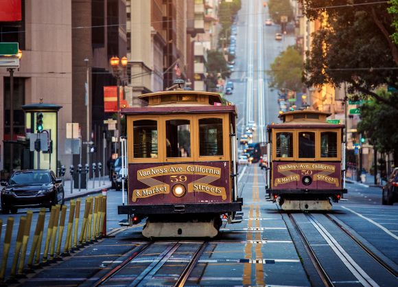
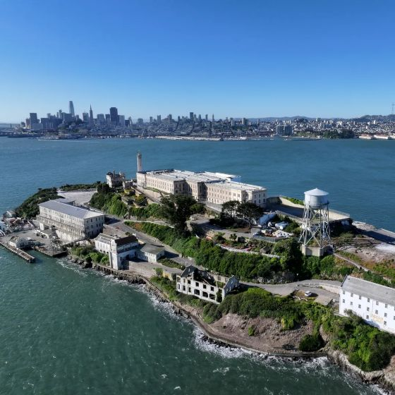

Landmarks of the Bay Area
San Francisco is home to many iconic landmarks that attract visitors from around the world. From the famous Golden Gate Bridge to the historic Alcatraz Island, the city offers a rich tapestry of architectural and cultural treasures.


Golden Gate Bridge
The Golden Gate Bridge is one of San Francisco’s most famous landmarks and is recognized around the world for its distinctive orange-red color. Opened in 1937, the bridge connects San Francisco to Marin County across the Golden Gate Strait and stretches about 1.7 miles (2.7 km). At the time of its completion, it was the longest suspension bridge main span in the world, and today it remains an important part of San Francisco’s history, transportation, and identity.
Learn more
Alcatraz Island
Alcatraz Island is a small island located in San Francisco Bay and is best known for its former federal prison, which operated from 1934 to 1963. The prison housed some of America’s most notorious criminals and was considered highly secure because of the cold, strong waters surrounding the island. Today, Alcatraz is a popular historic landmark and tourist attraction where visitors can explore the former prison and learn about its history.
Learn more